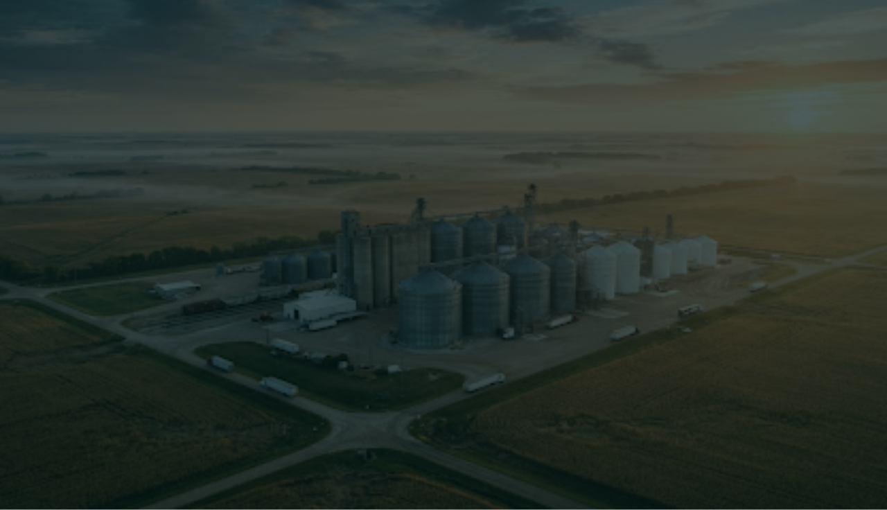
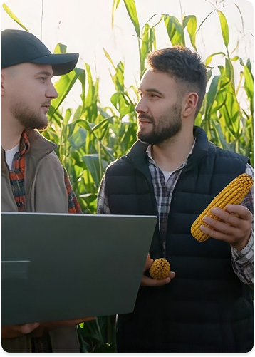

Gestão inteligente para o armazenamento de grãos
Monitore a capacidade dos seus silos em tempo real e transforme dados em decisões mais inteligentes para sua operação.
Antecipe problemas.
A GrainTech conecta sensores IoT aos seus silos para transformar dados de capacidade em informações, ajudando você a antecipar problemas e tomar decisões ágeis.Monitoramento inteligente
Acompanhe o nível dos seus silos em tempo real com sensores IoT e precisão total.Visão de operação
Painel completo com ocupação, enchimento e capacidade residual num só lugar.Gestão preventiva
Antecipe decisões com dados históricos para otimizar a logística e evitar gargalos ou transbordos.